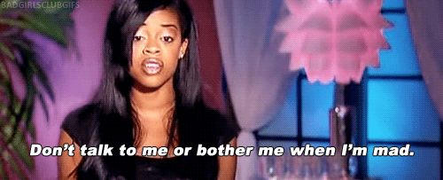

When The Beez Comes Out
JANUARY 3, 2015
I like Bad Girls Club. For those of you who might not be familiar with the premise, a bunch of sassy ladies move into a house together and let Oxygen film them. Sometimes a girl is talking to loud, and another girl throws a drink in her face. Sometimes they go out to the club and don't like the way another lady is staring at them so they start yelling at her. Sometimes they just hate one of the girls and do everything they can to make her leave the house (usually by throwing all of her shiz into the pool).
I get it. Just because I wouldn't necessarily pull out someone's weave doesn't mean I don't sometimes want to. It's just a stupid natural reaction we have to being, in some way, offended. However, attacking someone is usually not the best policy because then they're likely to get offended and you're already offended and so everyone's offended and angry and more likely to have a meltdown of some kind.
Although it's not easy, I feel like honesty about your thoughts and feelings is the best policy. If I think someone is giving me attitude for some reason, I'll often ask them about it. Maybe I did something that upset them, maybe they're just having a hard day, but responding with attitude back usually does not help the situation. Many conflicts are far easily solvable with a bit of understanding.
That said, sometimes people just really are mean. And in that case, I try to stay away from them as much as possible to avoid potentially throwing a drink in their face or chucking all of their belongings into a pool.